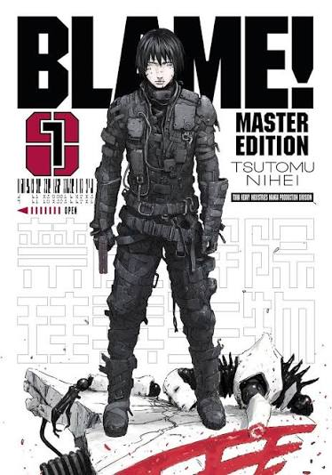
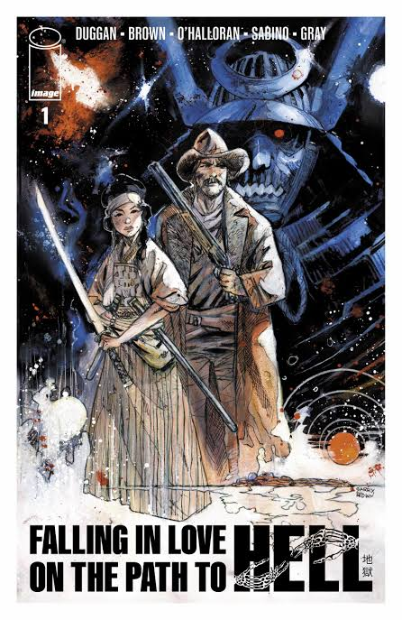
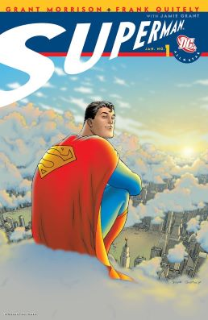
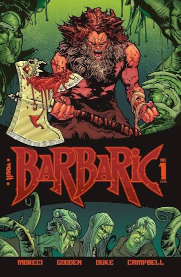
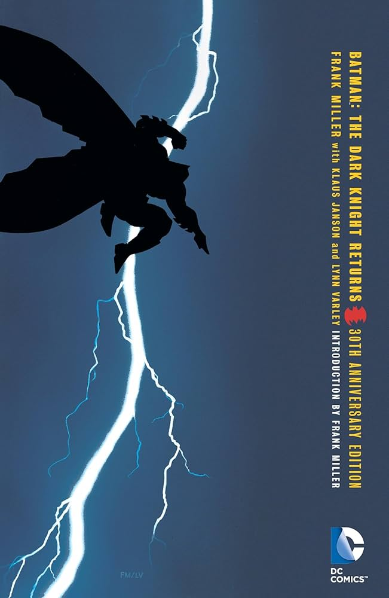

BLAME! MASTER EDITIONTSUTOMU NIHEI · 368PP · 3 OF 4 VOICED
FALLING IN LOVE ON THE PATH TO HELLDUGGAN · 152PP
ALL-STAR SUPERMAN0 OF 3
BARBARIC: AXE TO GRIND4 CASTS · LEAVES SUN
THE DARK KNIGHT RETURNS224PP NOISENIHEI · 224PP FALLING IN LOVE, BOOK TWODUGGAN · 184PP THE DARK KNIGHT STRIKES AGAINMILLER & VARLEYKilly walks a megastructure that outgrew its builders, hunting anyone who still carries the Net Terminal Gene. Nihei draws silence better than anyone, so the score is doing most of the work here.
| VOICE | PERFORMER | PREVIEW | VOUCHES |
|---|---|---|---|
| KILLY | IMOGEN ASH | 0:08 | 31 |
| CIBO | SAMUEL OPOKU | 0:08 | 44 |
| SANAKAN | TSUTOMU NIHEI | 0:06 | 88 |
| DHOMOCHEVSKY | OPEN — 9 LINES | — | RECORD |
| ART, SCRIPT | TSUTOMU NIHEI |
| LETTERING | MORRISON, QUITELY & GRANT |
Stage actor out of Cork. Low, tired warmth. Reads for horror and anything set near water. Open to unpaid parts under 30 lines.
| PARTS | 14 |
| LINES READ | 1,842 |
| VOUCHES | 412 |
| COMICS | 9 |